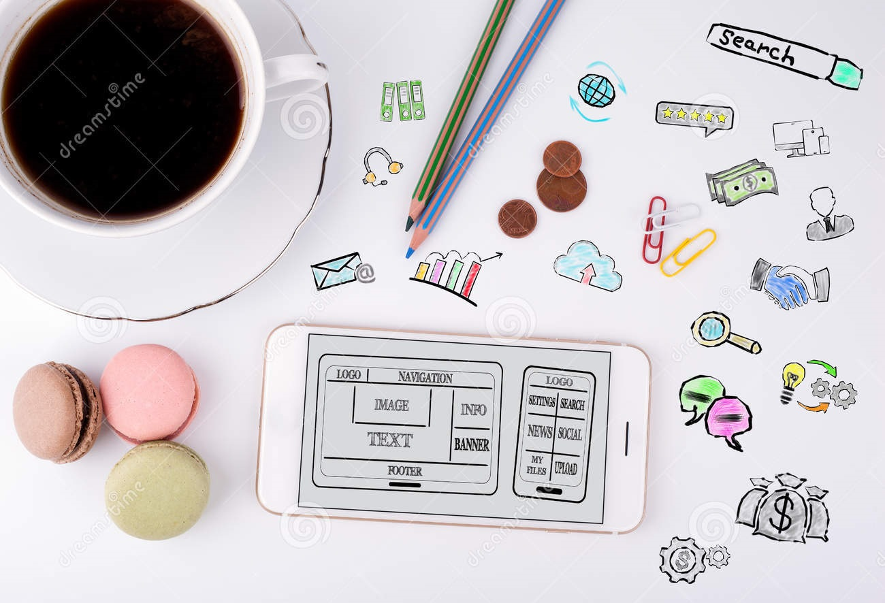

What We Do
Experion taps into the power of digital to develop custom software applications and products for industry domains such as Retail, Transportation & Supply Chain and Financial Services. In 12+ years, we grew swiftly to serve more than a hundred customers across the US, Australia, Asia and Europe. Our clients range from early stage to Fortune 500 companies.
Product Engingeering
We are specialists in Product Engineering services to Enterprises and startups alike,and take pride in collaborating, building and maintaining world-class software products that speed up achievement of customer goals. The entire software product lifecycle from the innovation stage, development, deployment up to user acceptance is taken care of by Experion.

SHAWN JOHNSTON
PRINCIPAL & LEAD STRATEGIST
A 21 year survivor of the design industry, Shawn is the Founder and Principal of Forge and Smith.
He plays a variety of roles from client rep to sales person, project manager to chief bottle washer.
OSCAR SANTIAGO
WEB PRODUCER
Oscar is a versatile and experienced digital project manager,
which makes sense since his favourite thing to do is watch The Flash with his sons.
When he’s not helping our clients get to the finish line
he’s training and competing in Brazilian Jui Jitsu competitions. Watch out!
SCOTT LIVINGSTONE
THEME DEVELOPER
Scott is a developer with a love for building and creating.
He enjoys problem solving and working to make beautiful websites.
When not writing code, he is likely riding a bicycle or hiking with his dog.
PAM BERG
SR. DIGITAL STRATEGIST
With backgrounds in journalism, computer forensics, and public libraries,
Pam’s obsessions with uncovering the hidden stories in data and developing strategic
content systems make perfect sense. Writing long-form optimized articles is her other jam.
Her Instagram feed is equal parts dogs (don’t tell her cats), waffles, and drag queens.